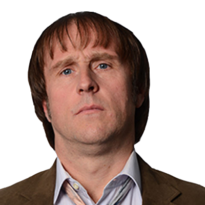
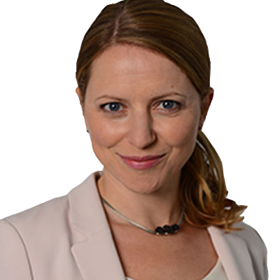

Die wichtigsten Figuren und deren Darsteller
Bernd Stromberg
Als Hauptfigur der Serie arbeitet er bei der Versicherung "Capitol". Dort wechselt seine Position sehr häufig, aber er bleibt meistens in der Leitung der Abteilung Schadensregulierung. Stromberg ist bei seinen Mitarbeitern nicht sehr beliebt, da er oft beleidigt und andere schlecht darstellt. In den Einzelinterviews stellt er sich aber gerne als kompetenten Geschäftsmann dar.
Christoph Maria Herbst
Für seine Rolle als Stromberg hat er bereits den Grimme-Preis und dreimal den Deutschen Comedypreis gewonnen. Herbst ist deutscher Schauspieler und Synchronsprecher und arbeitet nebenbei im Theater. Der Durchbruch gelang ihm 2002 in der Serie "Ladykracher". Seitdem spielt er in vielen Comedy-Formaten mit, darunter auch "Stromberg".

Berthold "Ernie" Heisterkamp
Dieser sehr eigenwillige, aber kompetente Mitarbeiter hat es nicht leicht in der "Capitol". Er wird von seinen Kollegen oft wegen seiner modisch fragwürdigen Kleidung und der Schweißflecken unter den Armen gemobbt. Der Spitzname "Ernie" kommt von Ernie & Bert aus der Sesamstraße. Erfolg bei Frauen hat er kaum.
Bjarne Mädel
Den deutschen Schauspieler kennt man nicht nur aus "Stromberg", sondern auch aus Serien wie "Der Tatortreiniger", "Mord mit Aussicht" oder "Der kleine Mann". Mädel hat Theaterwissenschaft und Literatur in Erlangen studiert und war danach als Schauspieler tätig.
Erika Burstedt
Sie ist eine durchaus kompetente Mitarbeiterin und lacht gerne über Späße und Witze. Allerdings ist sie durch ihr eher kopulenteres Äußeres ein beliebtes Ziel von Strombergs Scherzen. Erika hat eine gute Seele und kümmert sich auch gelegentlich um Ernie.
Martina Eitner-Acheampong
Die Schauspielerin von Erika Burstedt wirkt neben dem Schauspielerberuf auch als Theaterregisseurin. Im Theater spielt sie aber auch selber mit, unter anderem in dem Theaterstück "Mendy - das Wusical" von Helge Schneider. Sie war auch schon in "Tatort" und in anderen Krimi-Fernsehserien zu sehen.
Ulf Steinke
Büro ist für Ulf laut eigener Aussage eher nichts, er würde lieber was mit Autos machen. Deswegen ist er auch am wenigsten engagiert und blättert im Büro meist nur in Auto-Zeitschriften. Außerdem ist er meistens der einzige, der über Strombergs Witze lachen kann und sich selbst gerne über Ernie lustig macht. Allerdings kommt er gut bei Frauen an und heiratet später Tanja.
Oliver Wnuk
Unter anderem bekannt aus dem Film "Männertag" von 2016, spielte er auch in der NDR-Krimireihe "K3 - Kripo Hamburg" mit. Der studierte Schauspieler ist nebenbei auch als Schriftsteller und Hörspielsprecher tätig. So schrieb er das Ein-Mann-Stück "Einfach nur Siggi".

Tanja Seifert
Die junge, attraktive Kollegin ist in der Abteilung sehr beliebt. Sie ist eine der wenigen Mitarbeiterinnen, welche sich aktiv gegen Stromberg auflehnen. Außerdem behandelt sie auch Ernie mit Repekt. Tanja tritt kurzzeitig an Strombergs Stelle, welcher sie aber direkt wieder von ihrem neuen Posten vertreibt.
Diana Staehly
Studiert hat sie Medien- und Kulturwissenschaften in New York. Seitdem spielte die deutsche Schauspielerin dann in "Unter uns" mit. Außerdem trat sie auch in "Alarm für Cobra 11 - Die Autobahnpolizei", "Die Rosenheim-Cops", "Die Bergretter" und "SOKO Köln" auf.
Jennifer Schirrmann
Die selbstbewusste Mutter kommt nach mehrjähriger Kinderpause zurück in die Abteilung. Sie wirkt sehr bodenständig, aber auch in einigen Situation sehr emotional und angespannt. Stromberg nennt sie "Schirrmchen" und ist auch mit ihr einer eher schwierigen Beziehung.